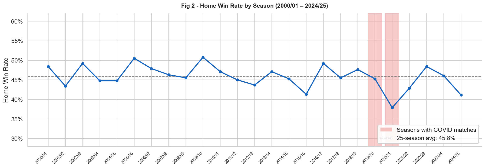
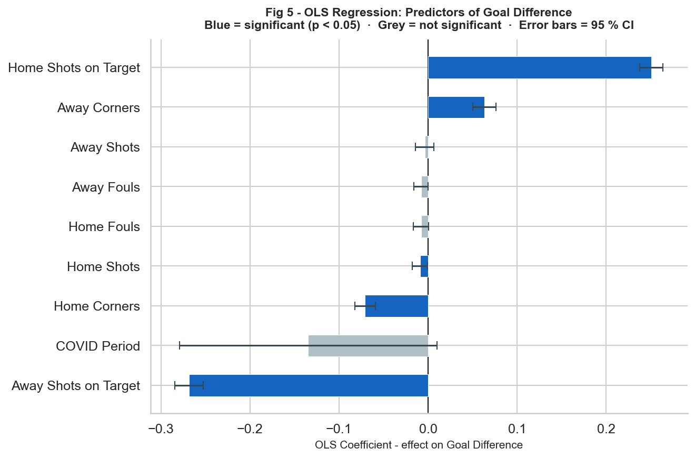
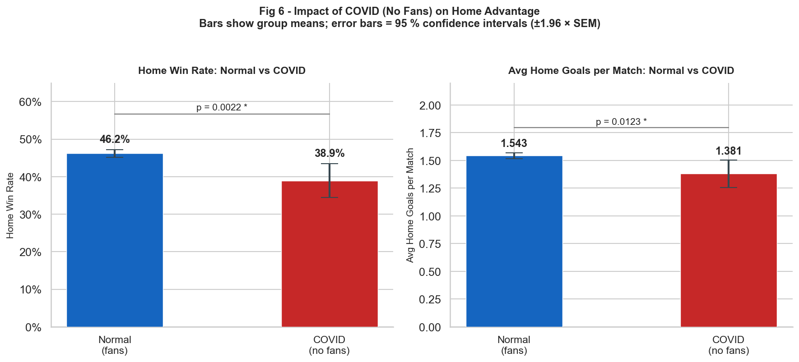

Premier League · 2000–2025 · Statistical Analysis
Did Crowd Absence Reduce Home Advantage?
Evidence from the Premier League During COVID-19
9,380 Premier League matches across 25 seasons. One natural experiment: two seasons without any crowd. The question was whether removing supporters actually reduced home advantage, or whether it was always something else.
1. Introduction
Home advantage is one of the most consistent patterns in sport. Across leagues, seasons, and decades, home teams win more often than visiting sides. But where does it actually come from? Familiarity with the pitch, no travel fatigue, possible referee bias — all of these have been suggested. The most intuitive explanation, though, is the crowd.
Anyone who has been to a football match knows the atmosphere is not neutral. Growing up watching River Plate in Argentina and going through the Superclásico against Boca Juniors made that obvious long before it became a question I wanted to study. The crowd does not just watch. It participates. The pressure home supporters place on visiting players is felt throughout the match, but it is most visible in moments of individual exposure: an away player standing alone to take a corner kick in front of thousands of hostile fans.
The problem is that it is really hard to separate the crowd's contribution from everything else. Under normal conditions, home teams play on their own pitch, with their own supporters, without the fatigue of travel, all at the same time. You would need a situation where one of those factors is removed while the others stay constant. The COVID-19 pandemic created exactly that.
From June 2020 through May 2021, the Premier League was played in empty stadiums. The same teams, the same pitches, the same rules, but no crowd. If supporter presence genuinely drives home advantage, removing it should produce a measurable decline. If home advantage stays the same, other factors must be doing the work.
This project uses 9,380 Premier League matches across 25 seasons from 2000/01 to 2024/25 to look at that question. The analysis works in two steps. First, an OLS regression identifies which performance indicators drive match outcomes under normal conditions. Second, Welch's t-tests compare home advantage directly between COVID and normal matches to test whether the crowd effect shows up in the results.
The central question is: did removing supporters during COVID-19 measurably reduce home advantage in the Premier League, and what does that tell us about what actually drives home team performance?
2. Data
The dataset covers 25 complete Premier League seasons from 2000/01 to 2024/25, with 9,380 matches in total. It was sourced from football-data.co.uk, a long-running repository of football statistics.
I chose the Premier League for two reasons. First, it is the most widely followed league in the world and has detailed match data going back decades, which makes it possible to study long-run patterns and the COVID disruption in the same dataset. Second, it is the league I have followed most closely since childhood as an Arsenal supporter. Anyone who has watched the Premier League knows the atmosphere is different: the crowds are loud, the stadiums are full, and the pressure on visiting teams is real. That made the research question feel personal from the start.
Each match record includes full-time and half-time results and goals, shots, shots on target, corners, fouls, and yellow and red cards for both teams. Modern football analysis has moved toward more sophisticated metrics. Possession percentages, expected goals (xG), and expected goals on target (xGOT) are now standard tools in professional clubs. Those were not available in this dataset. Shots on target was used as the main proxy for attacking quality, which is a reasonable approximation given how strongly it correlates with xG.
There were no missing values, so the cleaning was minimal. That was genuinely surprising — I expected at least some gaps in a dataset going back to 2000. The main decision was how to define the COVID period. Flagging entire seasons would have been inaccurate because the 2019/20 season had fans for most of its games before the March suspension. Instead I coded by date: matches played between 13 June 2020 and 23 May 2021 get a COVID flag of 1, everything else gets 0. The 2019/20 season finished behind closed doors from June 2020 and the 2020/21 season was played almost entirely without supporters, with a few brief exceptions in December 2020. Under this coding, 472 matches are COVID-period observations and 8,908 are normal.
I also created a few extra variables for the analysis: goal difference (home goals minus away goals), a binary home win indicator, shot accuracy for both teams, and a numeric result variable where home win equals 1, draw equals 0, and away win equals −1.
3. Methodology
3.1 Dependent and Independent Variables
For the regression I needed a variable that captures match outcome in a meaningful way. A simple win/loss indicator felt too blunt. A 4-0 win and a 1-0 win are both wins but they represent very different levels of dominance. Goal difference (home goals minus away goals) captures that distinction, so I used it as the dependent variable.
The independent variables are the performance statistics in the dataset: shots, shots on target, corners, and fouls for both teams, plus the COVID indicator. Shots on target is the closest proxy for attacking quality and it correlates strongly with xG, so I used it as the main measure of attacking threat.
3.2 OLS Regression
OLS regression finds the combination of coefficients that best fits the observed data. I chose it because it is straightforward to interpret and because it is the foundational tool in econometrics, which is the field I am applying to study. Each coefficient tells me how much goal difference changes when that variable goes up by one unit, holding everything else constant.
The model:
I used the 5% significance threshold (p < 0.05), the standard convention in economics and social science. When I checked the regression diagnostics, I noticed a clear striping pattern in the residuals vs. fitted values plot. After looking into it, the explanation was straightforward: goals are always whole numbers. Goal difference only takes integer values, but OLS technically assumes the dependent variable is continuous. A more rigorous approach would be an ordered logistic or Poisson regression. I kept OLS here as a transparent approximation since with nearly 9,400 observations the estimates are stable, but I flag this as a limitation in Section 5.
3.3 COVID Analysis
To test whether crowd absence reduced home advantage, I compared two groups directly: matches played during the COVID period and all other matches. The obvious tool is a t-test, but the two groups are very different in size — 472 COVID matches versus 8,908 normal ones. The standard Student's t-test assumes similar variance in both groups, which is hard to justify when one group is twenty times larger. Welch's t-test relaxes that assumption and is specifically recommended for unequal group sizes.
With nearly 9,400 observations, even a very small difference can produce a statistically significant p-value — not because the effect is meaningful in practice, but just because the sample is large enough to detect almost anything. That is worth keeping in mind when reading the results: statistical significance and practical importance are not the same thing.
4. Results
4.1 Home Advantage Exists
Over 25 Premier League seasons, home teams won 45.8% of matches, drew 24.7%, and lost 29.5%. That is a consistent advantage that barely moved over two and a half decades. Figure 2 tracks home win rate season by season. The long-run average of 45.8% holds with natural variation but no real trend, until 2020/21, which has the lowest home win rate in the entire dataset at around 38%. That drop lines up exactly with the season played almost entirely without supporters.
Looking at goals over time, home teams consistently outscored away teams throughout the dataset, but the gap narrows during the COVID period. What stands out is that the decline is asymmetric: home teams scored fewer goals while away teams were relatively unaffected. That is the first visual sign that crowd absence hurt home sides specifically, not both teams equally.

4.2 What Drives Performance Under Normal Conditions
The regression explains 30.8% of the variance in goal difference (R² = 0.308). That is modest, but consistent with how unpredictable football is. Dominant teams lose matches they should win all the time, and a model without possession or xG data is not going to capture the full picture. What it does show is a clear hierarchy among the variables.
Shots on target dominate. HomeShotsOnTarget has the largest positive coefficient (β = +0.251, p < 0.001) and AwayShotsOnTarget the largest negative (β = −0.268, p < 0.001). Every extra home shot on target adds 0.25 to goal difference and every extra away shot on target takes 0.27 away. Shot quality is the main statistical driver — not volume, not set pieces, not discipline.
Total shots add almost nothing once shots on target are in the model. HomeShots has a coefficient of −0.009 (p = 0.040) and AwayShots −0.004 (p = 0.438). Fouls are marginally negative for both teams, which makes sense since teams committing more fouls are usually defending under pressure.
Corners gave the most surprising result. HomeCorners has a statistically significant negative coefficient (β = −0.071, p < 0.001). More corners for the home team is associated with a lower goal difference, not a higher one. Once shots on target are in the model, corners no longer signal genuine attacking threat. A team winning corners but not shots on target is creating set pieces without real goalscoring danger. I expected corners to be a sign of dominance. The data disagrees.
The COVID dummy is not significant in the regression (β = −0.056, p = 0.336). This is not because crowd absence had no effect. The regression already controls for in-game performance — if having a crowd makes home teams perform better in terms of shots and corners, that effect is already absorbed by those variables. To answer whether crowd absence reduced home advantage I need a different approach: comparing outcomes across the two periods without controlling for performance. That is what the t-tests do.

4.3 Isolating the Crowd Effect
Home win rate fell from 46.2% in normal seasons to 39.6% during COVID, a drop of 6.5 percentage points (p = 0.005). Average home goals per match dropped from 1.543 to 1.390, a reduction of 0.153 goals per match (p = 0.016). Both results confirm that home advantage measurably weakened when matches were played without supporters.
The decline is real and statistically significant, but its practical size is modest — Cohen's d is around 0.15 for both comparisons. Crowd absence reduced home advantage without eliminating it. Home teams still won more often than away teams in empty stadiums. Supporter presence is one driver of home advantage, but not the only one. Familiarity with the pitch, no travel fatigue, and possible referee effects likely all continue to operate regardless of whether fans are present.

Both parts of the analysis tell the same story. The regression shows that shot quality is the dominant performance predictor under normal conditions. The COVID analysis shows that part of what generates the home team's edge is the crowd itself: without supporters, home teams scored less and won less. The crowd does not appear directly in the regression model, but its absence shows up clearly in the results.
5. Limitations and Future Work
5.1 Limitations
The model explains 30.8% of the variance in goal difference, leaving 69.2% unexplained. That is not just a data problem — it reflects something real about football. The missing variables point to things that are genuinely hard to quantify: individual player quality on a given day, squad rotation and fatigue, tactical decisions to sit deep and absorb pressure, the context of a match, and the randomness of the sport itself. A deflection, a refereeing call, a moment of individual brilliance: none of these show up in team-level statistics but all of them affect results.
The COVID indicator, while coded by date rather than by season, still has a limitation. A small number of matches in December 2020 allowed limited crowd attendance under regional rules. Those are included as COVID matches here, which makes the comparison slightly less clean than it could be.
Finally, goal difference only takes integer values, which technically violates the OLS assumption of a continuous dependent variable. As discussed in Section 3, OLS is kept as a transparent approximation, but an ordered logistic or Poisson framework would be more rigorous.
5.2 Future Work
The most direct extension would be replicating the analysis with a dataset that includes possession, xG, and tracking data. With those variables it would be possible to ask more specific questions: do home teams press more aggressively with a crowd? Do they generate better shots, or just more of them?
A second direction comes from a pattern I noticed while exploring the data. Home win rate in 2024/25 sits at around 41%, the second lowest in the dataset and well below the 25-season average of 45.8%, with no COVID to explain it. That raises a question this analysis cannot answer: is home advantage structurally declining in modern football? One possible reason is that data-driven preparation has improved so much that visiting teams now arrive better equipped than ever.
A third observation is the spike in average goals per match during 2023/24, which hit the highest value in the 25-season dataset at around 3.27 goals per match. Whether that reflects a genuine tactical shift or a one-season anomaly is an open question.
6. Conclusion
This project started with a question any football fan has probably wondered about: does the crowd actually matter, or is home advantage just a reflection of better performance by teams on familiar ground? The answer, based on 9,380 Premier League matches across 25 seasons, is that both things are true.
The regression showed that under normal conditions shot quality is the dominant driver of match outcomes. Shots on target for both teams have by far the largest coefficients in the model. Corners, which most people associate with attacking pressure, showed a significant negative relationship with goal difference once shots on target were controlled for. A team winning corners but not shots on target is generating set pieces without real goalscoring threat. Volume is not the same as quality.
The COVID analysis answered the main question directly. When supporters were removed between June 2020 and May 2021, home win rate fell from 46.2% to 39.6% and average home goals dropped from 1.543 to 1.390. Both drops are statistically significant. Crowd absence reduced home advantage without eliminating it. Home teams still won more in empty stadiums, which suggests supporter presence is one factor among several, not the whole explanation.
The model explains 30.8% of what determines goal difference. The other 69.2% is everything this data cannot capture: individual quality, tactical choices, fatigue, motivation, and the randomness of a sport decided by moments. That gap is not a failure of the model. It is just what football is.
football-data.co.uk. (2025). English Premier League Match Statistics, 2000/01–2024/25.
Seabold, S., & Perktold, J. (2010). Statsmodels: Econometric and statistical modeling with Python. Proceedings of the 9th Python in Science Conference.